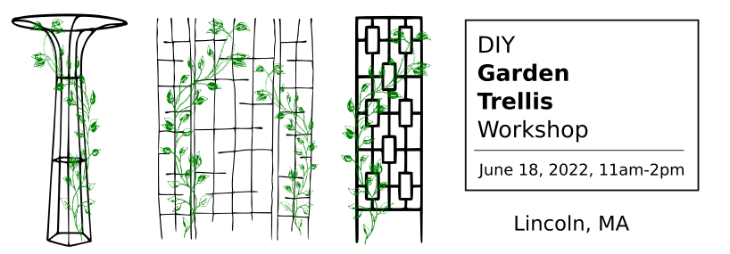
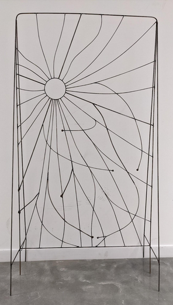
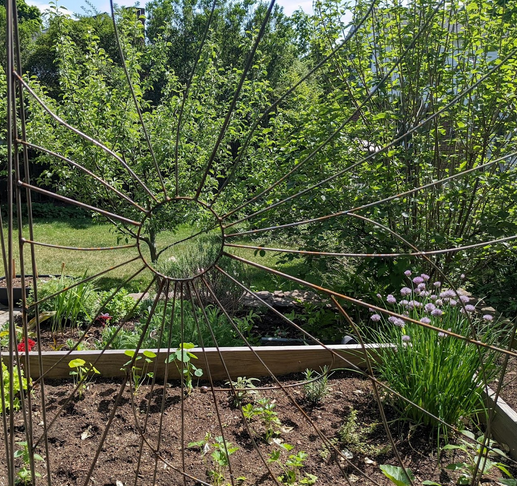

Family friendly -- Pay what you can -- Suggested donation $75
"Don't be jealous -- make a trellis!" Between the pandemic gardening boom and rising food prices, gardening is more popular than ever. Every garden needs a trellis for climbing plants! Great for crops like tomatoes, beans, peas, or use it for ornamentals!
Cut and bend steel bar into whatever shapes you dream up -- Trellises can be any shape or size, limited only by the materials and your imagination!
FATQ (Frequently Asked Trellisin' Questions)
Q: What should I bring?
A: Clothes you don't mind getting dirty, work boots and gloves if you can, ideally only cotton/wool/leather clothing, no synthetics if possible. Glasses (including reading glasses) if you need them for close up work. Any welding PPE you might happen to have. Ideas, creativity, ingenuity! Cash or Venmo for donations.
Q: Do I need any welding or metalworking experience?
A: Literally none at all, this is a perfect project for a complete beginner.
Q: Can I make a trellis of ______ shape/size?
A: Probably! The materials are available only in 12-foot lengths, so that limits the overall size, but then again we can probably weld two pieces together to overcome that obstacle if you're set on a larger design. Generally we're leaning towards making trellises that insert into the ground, but they can be wall-mounted if you make or buy a bracket.
Q: Will I learn to weld?
A: Not exactly, but you'll have a chance to try it, watch it, and learn about it. We only have one welding machine, so it'll probably make more sense to have a dedicated welding person or two, with other people doing more bending, shaping, designing, iterating.
Q: Will these trellises rust?
A: Yes, unless you paint yours! Rust isn't necessarily a problem -- rusty metal doesn't necessarily look out of place in a garden, and while rust will eventually erode the trellis completely, this process can take many years. If you want to paint yours to prevent rust, we recommend doing it soon after manufacturing, and using spray paint or a brush-on paint designed for metal. Painting won't be covered extensively in this workshop.